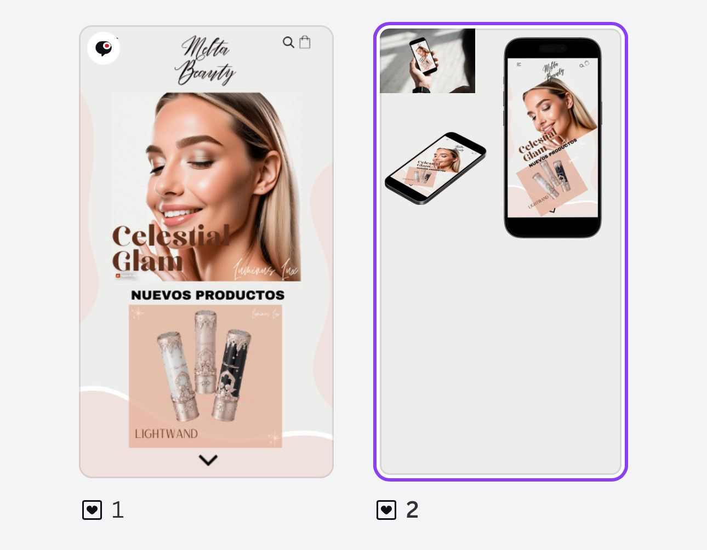
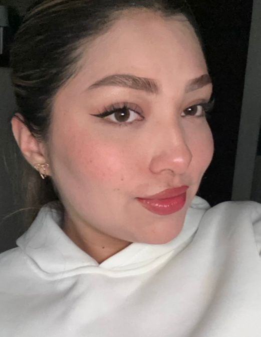
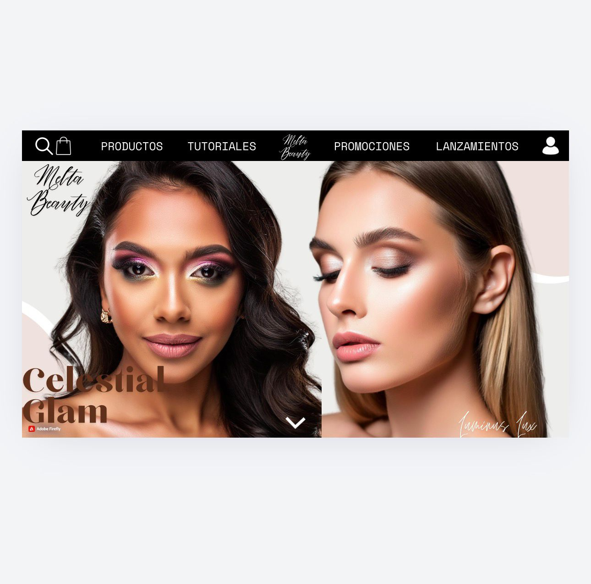
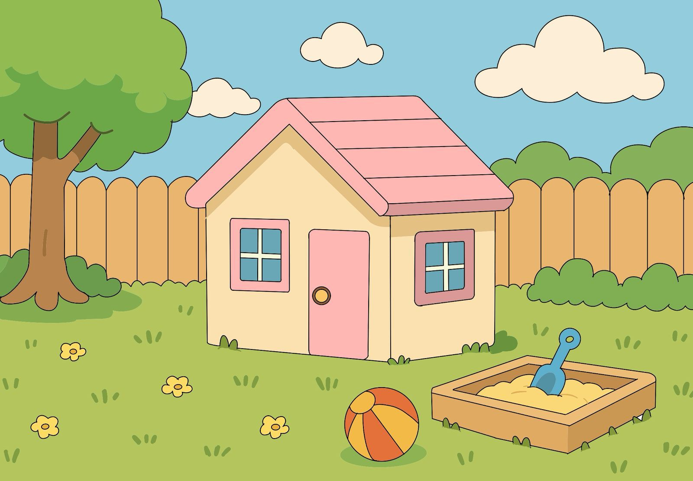
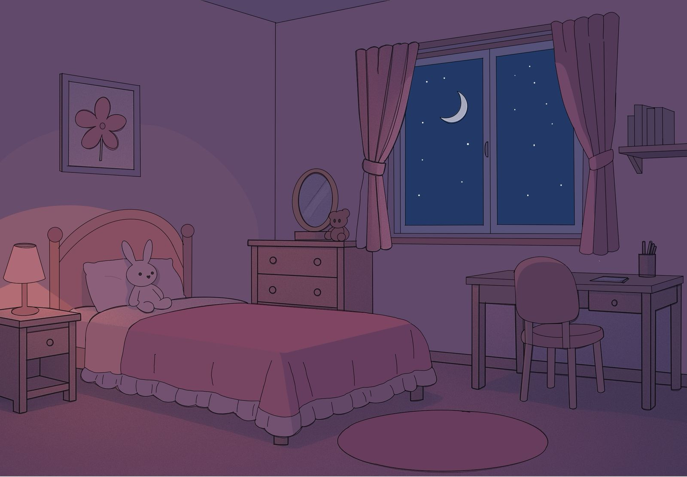

Proyecto 1

Descripción del proyecto
Bienvenido a mi portafolio. Aquí encontrarás mis proyectos, habilidades y experiencia.

Soy Juanita Espinosa, estudiante de Ingenieria Multimedia en la Universidad de Compensar. Me caracterizo por ser una persona muy alegre, compañerista. Me gusta diseñar cosas en Canva, Figma y otras plataformas.
Me interesa especialmente el área de Diseño de páginas web. En mi tiempo libre disfruto cocinar, ver películas o series romanticas, pintar cuadros o maquillarme.
Tengo conocimientos en HTML, CSS, Java Script y Figma. También manejo herramientas como Illustrator, Canva, Maya y Phyton.
Actualmente estoy enfocada en mejorar mis habilidades en lenguajes de códigos, como Phyton, Java y otros.
En mi tiempo libre me gusta practicar maquillaje y explorar el diseño visual. También disfruto organizar mis actividades, probar nuevas ideas y trabajar en proyectos que me permitan crecer personal y profesionalmente.

Descripción del proyecto

Descripción del proyecto

Descripción del proyecto

Descripción del proyecto
Correo: espinosajuanita010@gmail.com
Teléfono: 3043457769
Ciudad: Bogotá